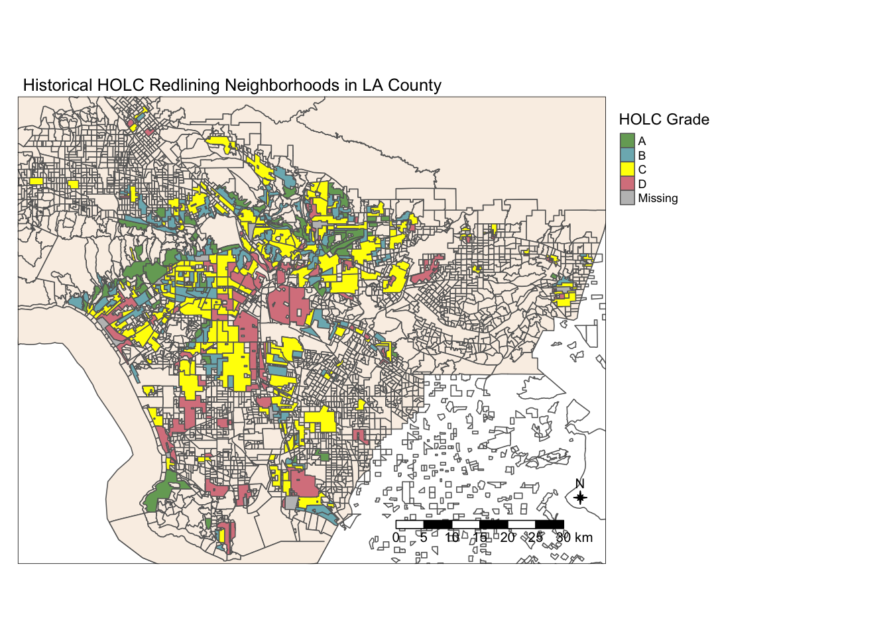
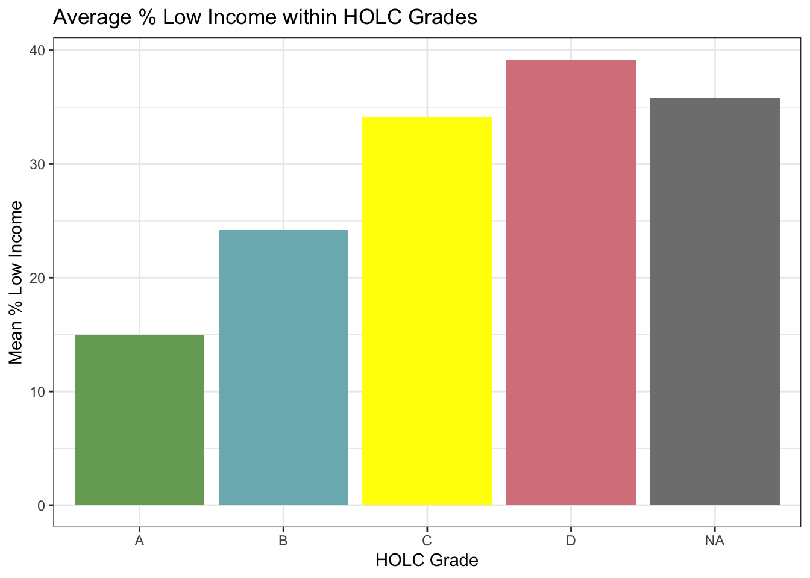
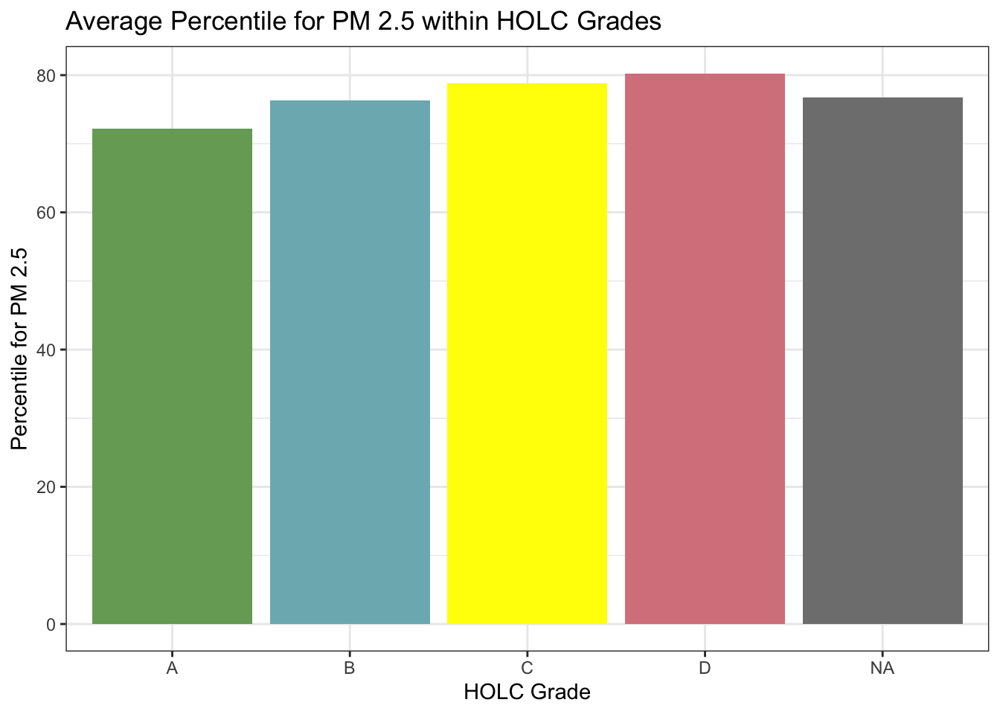
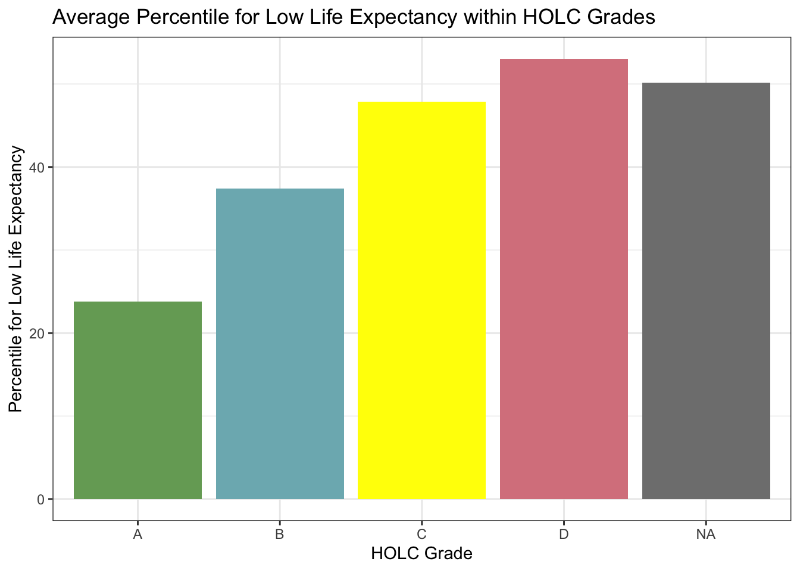
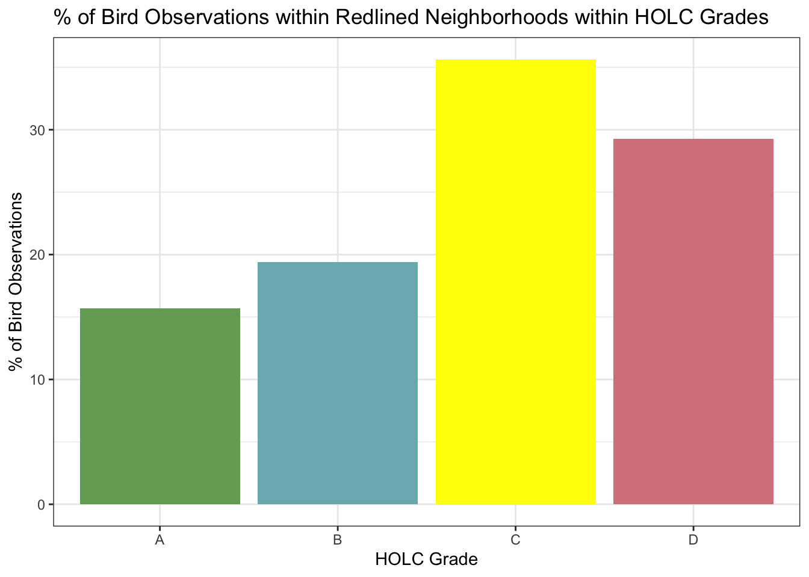

Code
# Load packages
library(sf)
library(tmap)
library(tidyverse)
library(spData)
library(kableExtra)
library(patchwork)Exploring patterns of environmental justice
# Load packages
library(sf)
library(tmap)
library(tidyverse)
library(spData)
library(kableExtra)
library(patchwork)# Read in data
ejscreen <- st_read(here::here("data", "ejscreen/EJSCREEN_2023_BG_StatePct_with_AS_CNMI_GU_VI.gdb"))
holc <- st_read(here::here("data", "mapping-inequality/mapping-inequality-los-angeles.json"))
birds <- st_read(here::here("data", "gbif-birds-LA/gbif-birds-LA.shp"))# Check coordinate reference system for each dataset
st_crs(ejscreen)
st_crs(holc)
st_crs(birds)
if (!identical(st_crs(ejscreen), st_crs(holc)) || !identical(st_crs(holc), st_crs(birds))) {
warning("Warning: Coordinate Reference Systems do not match between datasets.
Current CRS values:
ejscreen: ", st_crs(ejscreen)$input,
"\nholc: ", st_crs(holc)$input,
"\nbirds: ", st_crs(birds)$input)
}# Transform datasets into same CRS as `ejscreen`
holc <- st_transform(holc, crs = st_crs(ejscreen))
birds <- st_transform(birds, crs = st_crs(ejscreen))
# Check that units match
st_crs(ejscreen)$units
st_crs(holc)$units
st_crs(birds)$units# Filter data to LA County
ejscreen_LA <- ejscreen %>%
filter(CNTY_NAME == "Los Angeles County")
# Filter data to counties near LA for plotting
ejscreen_near_LA <- ejscreen %>%
filter(STATE_NAME == "California",
CNTY_NAME == c("Ventura County",
"Kern County",
"San Bernardino County",
"Orange County",
"Los Angeles County"))# Plot a map of historical redlining neighborhoods colored by HOLC grade
tm_shape(ejscreen_near_LA, bbox = holc) +
tm_polygons(col = "white") +
tm_shape(ejscreen_LA, bbox = holc) +
tm_polygons(col = "linen") +
tm_shape(holc) +
tm_polygons(col = "grade",
palette = c(
"A" = "#76a865",
"B" = "#7cb5bd",
"C" = "#ffff00",
"D" = "#d9838d"),
title = "HOLC Grade") +
tm_compass(type = "8star",
size = 0.8) +
tm_scale_bar(text.size = 0.8) +
tm_layout(main.title = "Historical HOLC Redlining Neighborhoods in LA County",
main.title.size = 0.8,
scale = 0.8,
legend.outside = TRUE)
# Find the current census block groups within the HOLC data
redlining <- st_join(holc, ejscreen_LA, join = st_intersects)
nrow(redlining)[1] 6388# Create a table summarizing the percent of current census block groups within each HOLC grade
holc_table <- redlining %>%
group_by(grade) %>%
summarise(count = n()) %>%
ungroup() %>%
mutate(percent = (count/sum(count))*100) %>%
st_drop_geometry()
# Check that the percentages add up to 100%
testthat::expect_equal(sum(holc_table$percent), 100)
# Format table
holc_table_kable <- holc_table %>%
kbl(caption = "Percent of Census Block Groups within each HOLC Grade") %>%
kable_classic(html_font = "Cambria")
# Display table
holc_table_kable| grade | count | percent |
|---|---|---|
| A | 449 | 7.028804 |
| B | 1239 | 19.395742 |
| C | 3058 | 47.871008 |
| D | 1346 | 21.070758 |
| NA | 296 | 4.633688 |
# Percent low income conditions wihtin HOLC grades
low_income_holc <- redlining %>%
group_by(grade) %>%
summarise(mean_low_income = mean(LOWINCPCT)*100) %>%
st_drop_geometry()
low_income_plot <- ggplot(low_income_holc, aes(x = grade, y = mean_low_income, fill = grade)) +
geom_col() +
scale_fill_manual(
values = c("A" = "#76a865",
"B" = "#7cb5bd",
"C" = "#ffff00",
"D" = "#d9838d")) +
labs(title = "Average % Low Income within HOLC Grades",
fill = "Grade",
x = "HOLC Grade",
y = "Mean % Low Income") +
theme_bw() +
theme(legend.position = "none")# Percentile of PM 2.5 wihtin HOLC grades
pm_holc <- redlining %>%
group_by(grade) %>%
summarise(mean_pm = mean(P_PM25)) %>%
st_drop_geometry()
pm25_plot <- ggplot(pm_holc, aes(x = grade, y = mean_pm, fill = grade)) +
geom_col() +
scale_fill_manual(
values = c("A" = "#76a865",
"B" = "#7cb5bd",
"C" = "#ffff00",
"D" = "#d9838d")) +
labs(title = "Average Percentile for PM 2.5 within HOLC Grades",
fill = "Grade",
x = "HOLC Grade",
y = "Percentile for PM 2.5") +
theme_bw() +
theme(legend.position = "none")# Percentile of low life expectancy within HOLC grades
life_exp_holc <- redlining %>%
group_by(grade) %>%
summarise(mean_life_exp = mean(P_LIFEEXPPCT, na.rm = TRUE)) %>%
st_drop_geometry()
life_exp_plot <- ggplot(life_exp_holc, aes(x = grade, y = mean_life_exp, fill = grade)) +
geom_col() +
scale_fill_manual(
values = c("A" = "#76a865",
"B" = "#7cb5bd",
"C" = "#ffff00",
"D" = "#d9838d")) +
labs(title = "Average Percentile for Low Life Expectancy within HOLC Grades",
fill = "Grade",
x = "HOLC Grade",
y = "Percentile for Low Life Expectancy") +
theme_bw() +
theme(legend.position = "none")# Display plots for current conditions within HOLC Grades
low_income_plot
pm25_plot
life_exp_plot
For each environmental indicator, conditions are better the higher the HOLC grade is. This tracks with documented consequences of redlining, where neighborhoods that were deemed historically deemed declining or hazardous fare worse on community and environmental health today.
# Filter biodiversity observations to 2022 data
birds <- birds %>%
filter(year == 2022)
# Join the bird observation data to the redlining data
birds_join <- st_join(birds, holc, join = st_within)
# Find the percent of bird observations within each HOLC grade
# Drop observations that are not within an HOLC grade
birds_holc <- birds_join %>%
drop_na() %>%
group_by(grade) %>%
summarise(count = n()) %>%
ungroup() %>%
mutate(percent = (count/sum(count))*100)
# Plot percent of observations within redlined neighborhoods within each HOLC grade
ggplot(birds_holc, aes(x = grade, y = percent, fill = grade)) +
geom_col() +
scale_fill_manual(
values = c("A" = "#76a865",
"B" = "#7cb5bd",
"C" = "#ffff00",
"D" = "#d9838d")) +
labs(title = "% of Bird Observations within Redlined Neighborhoods within HOLC Grades",
fill = "Grade",
x = "HOLC Grade",
y = "% of Bird Observations") +
theme_bw() +
theme(legend.position = "none")
Ellis-Soto et al. found that “historically redlined neighbourhoods remain the most undersampled urban areas for bird biodiversity today”, and that sampling density increases with HOLC grade. In my findings, however, percent of bird observations is highest in “C” and “D” areas, rather than the higher HOLC grades. The area of neighborhoods for each HOLC grade is not constant for LA County, and areas “C” and “D” are much larger, which could be why the percentage of bird observations is higher for those grades.
| Data | Citation | Link |
|---|---|---|
| EJScreen | United States Environmental Protection Agency. 2023 version. EJScreen. Retrieved: [Retrieved October 23, 2024, from https://www.epa.gov/ejscreen/download-ejscreen-data] | Geodatabase of National EJScreen Data at the Tract Level |
| HOLC Redlining Data | Nelson, R. K., Winling, L, et al. (2023). Mapping Inequality: Redlining in New Deal America. Digital Scholarship Lab. https://dsl.richmond.edu/panorama/redlining. | Mapping Inequality Data |
| Birds Data | Retrieved October 2023, 2024, from gbif.org | n/a |